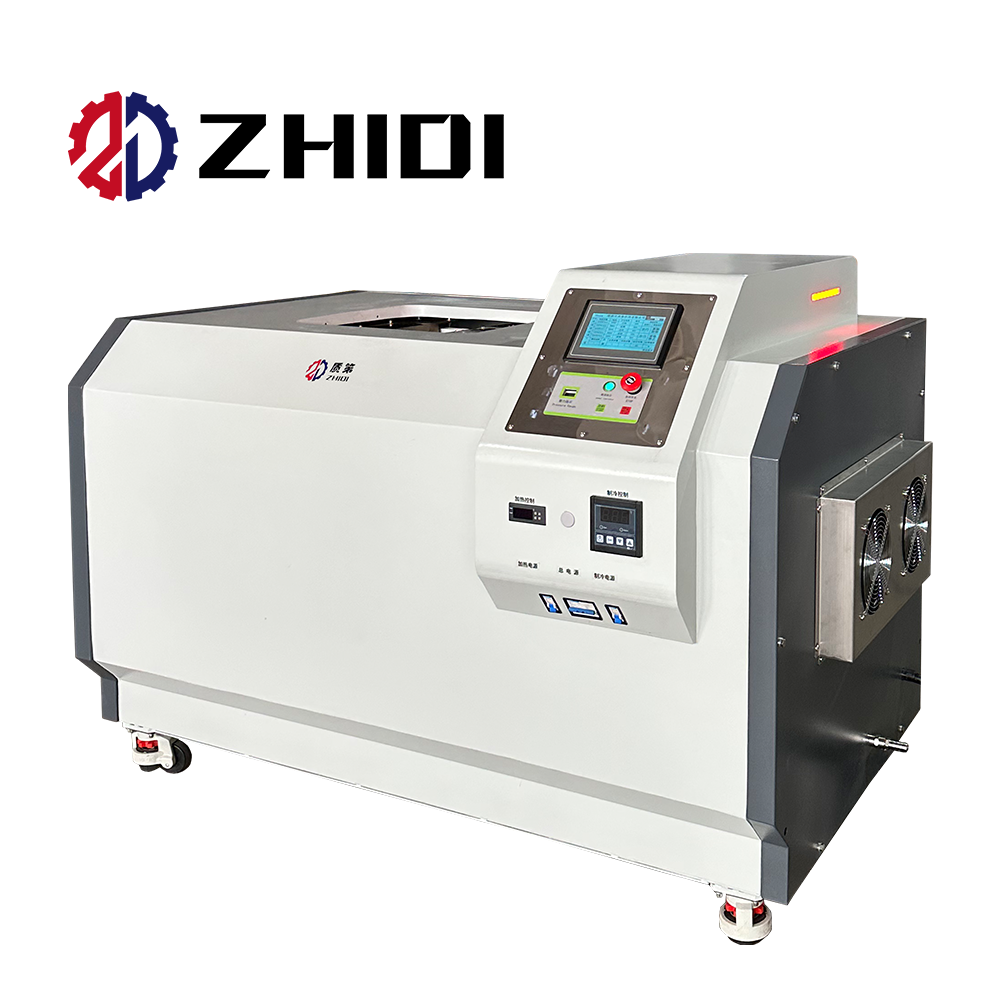
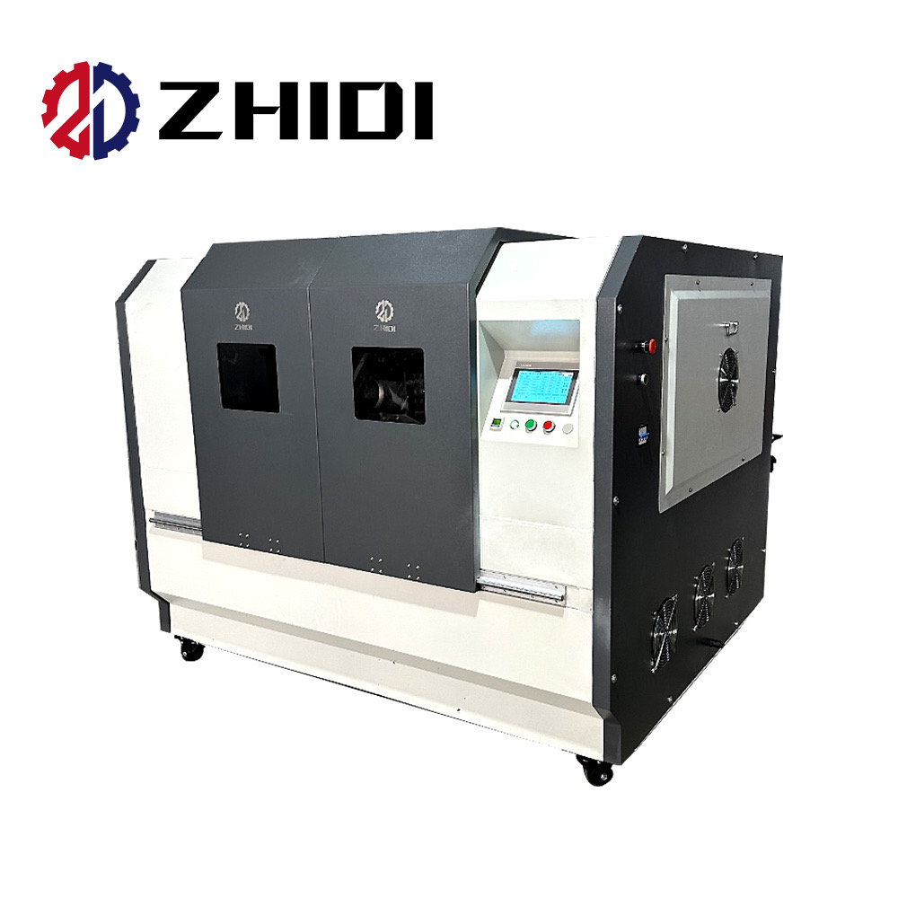

i.classList.remove('active'));this.classList.add('active')">The ZHIDI SMT Stencil Inspection Machine provides semi-automatic steel mesh defect inspection and automatic tension testing for SMT (Surface Mount Technology) stencil quality control. Designed for PCB assembly lines, it detects mesh defects, tension anomalies, and aperture irregularities before solder paste printing — preventing costly production errors downstream. Also available as a manual inspection stencil screen inspection platform at CNY 16,835. Full semi-automatic models range from CNY 168,350 to CNY 175,084.
Complete model range from single frame to multi-frame capacity
| Model Variant | Inspection Mode | Key Function | Price (CNY) |
|---|---|---|---|
| Stencil Screen Inspection Platform | Manual | Manual stencil screen inspection for basic quality checks | 16,835 |
| SMT Steel Mesh Testing Platform | Semi-automatic | Steel mesh tension testing platform for SMT production | 168,350 |
| SMT Stencil Inspection Machine | Semi-automatic | High-efficient stencil inspection with automatic tension inspection | 175,084 |
| Stencil Inspection Machine | Semi-automatic | Steel mesh defect inspection and automatic tension inspection | 175,084 |
| High Quality SMT Solder Paste Stencil Inspection Machine | Automatic | Full PCB assembly line integration for solder paste stencil inspection | 175,084 |
* Prices are reference prices from Alibaba store. Contact us for the latest pricing and configuration options.
Mount the SMT stencil onto the inspection platform. The semi-automatic system positions the stencil for consistent, repeatable inspection across the entire mesh surface.
The system performs automatic tension testing across the stencil surface and scans for mesh defects — including blocked apertures, damaged mesh, and tension anomalies — that could cause solder paste printing failures.
Results are displayed immediately — stencils that pass are cleared for production, while defects are flagged for cleaning or replacement. Prevents defective stencils from reaching the SMT printing line.
Solder paste stencil inspection, tension verification before printing
Quality control for SMT printing stencils, defect prevention
Incoming stencil QC, periodic tension inspection, pre-production verification
Outgoing quality inspection for stencil fabricators, final QC before shipping
We can customize inspection mode (manual/semi-auto/automatic), tension range, and integration options for your SMT production line.
Get Custom Quote